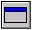
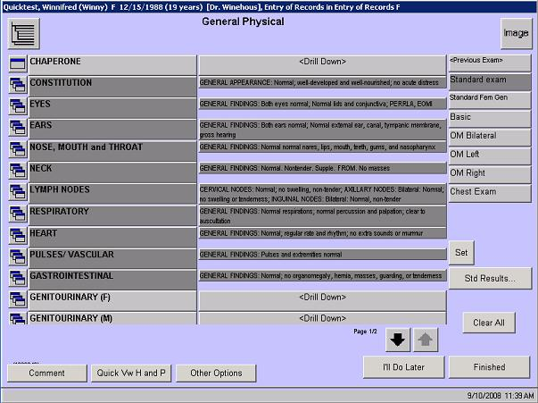
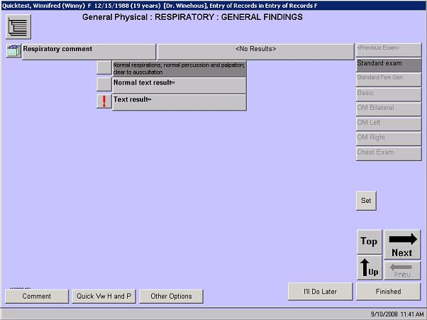

|
In this solution?
- Description
- Examples
- When to Use...
- What Do You Want to Do?
- Want to Learn More?
- Related Solutions
- Related Education Opportunities
Description
In general, if you are entering subjective or objective data about the patient, you will be entering that information in an observation screen.
Many items in encounterPRO are considered observations, including:
- Subjective
- Observations
- Chief Complaint
- Telephone Record
- Histories, including:
- Dictated H & P
- History of Present Illness (HPI)
- Past Medical/Family/Social History (PFSH)
- Other Histories
- Child Development
- Child Health Education
- Physical exams
- Review of Systems (ROS)
- Objective Observations
- Vitals
- Lab and Test results, including:
- Biopsy/Cyto-Pathology
- Cardiovascular Test
- CAT/CTA
- Labs
- MRI/MRA
- Nuclear Tests
- Tests
- Timed Tests
- Ultrasound
Simple vs. Composite Observations
Observations can be configured on a single level or multiple levels. Multiple level observations require the user to drill down to select or enter results. On the drilldown screens, the type of observation will be designated by a small icon to the left of the observation description.
Indicates that this observation is a composite (multi-level) observation
 Indicates that this observation is a simple (single-level) observation.
The following screen shows the General Physical observation which is made up of many composite observations.

You can nest composite observations within a composite observation or mix composite and simple observations within a composite observation. The following screen shows the simple observation that is found when the user drilled down on the General Findings option of the Respiratory section of the General Physical.

|